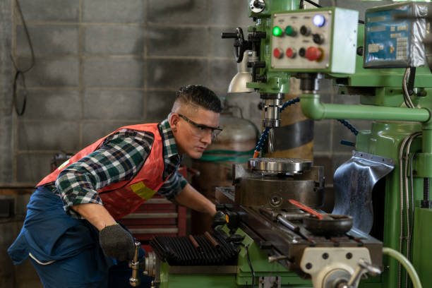

the manual thoroughly before starting. This ensures you are aware of the machine's features,
specifications, and safety protocols.
Check the material thickness. Make sure it meets the requirements for the machine and the job.
Adjust the cutting parameters according to the specifications. These include feed rate, spindle speed,
and tool diameter.
Verify the cutting sequence and check for errors.
Clear the workspace of any obstacles, loose parts, or objects that may interfere with the operation of
the machine.
Perform a last check to ensure the machine is in a stable condition. This includes checking for
adequate lubrication and freeing the machine from any obstacles.
Engage the safety interlock before starting the machine.
Operate the machine in a controlled and orderly manner. This includes observing safety precautions and
monitoring the cutting process for any signs of distress.
Check the completed part for any discrepancies, defects, or deviations from the intended design.
Immediately address any issues that arise during the cutting process. This includes pausing the machine
to correct any problems or ensuring proper safety procedures are followed.
Follow any aftercare instructions provided by the manufacturer to ensure the machine is maintained
properly and that its lifespan is maximized.

CNC/VMC machine Operter
you must have an account Register
after tranning and get certificate
your tranning course apply certificate
collect certificate
all information collect by course to check address and come to office.